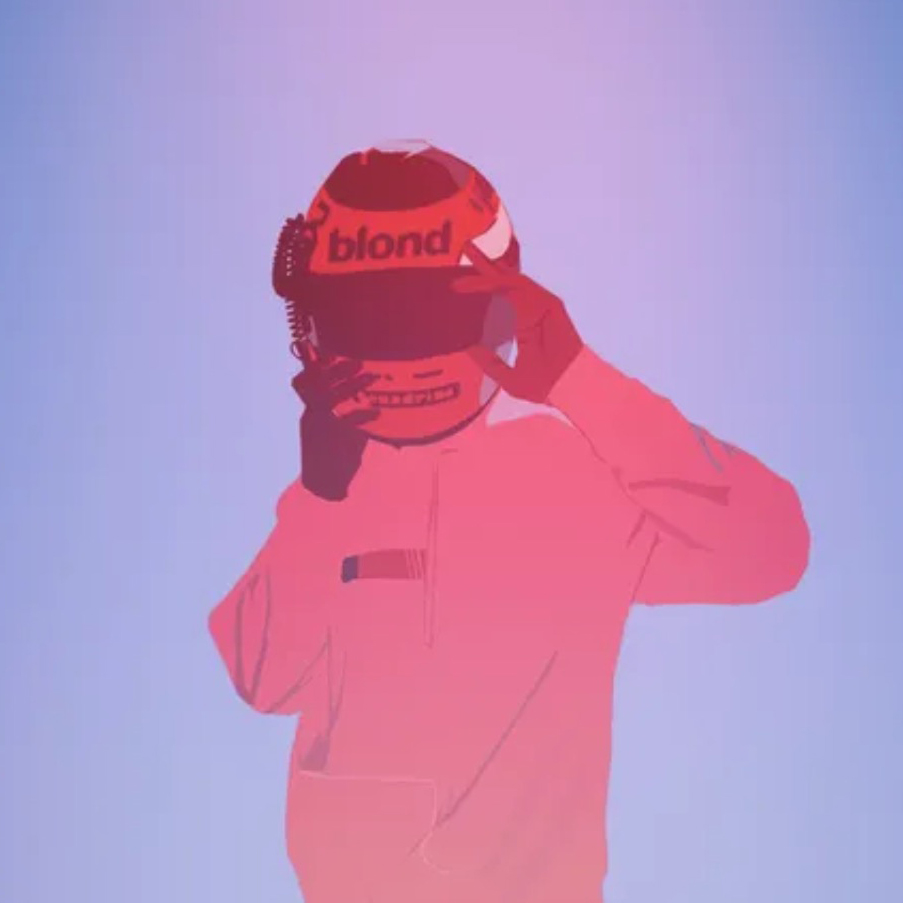
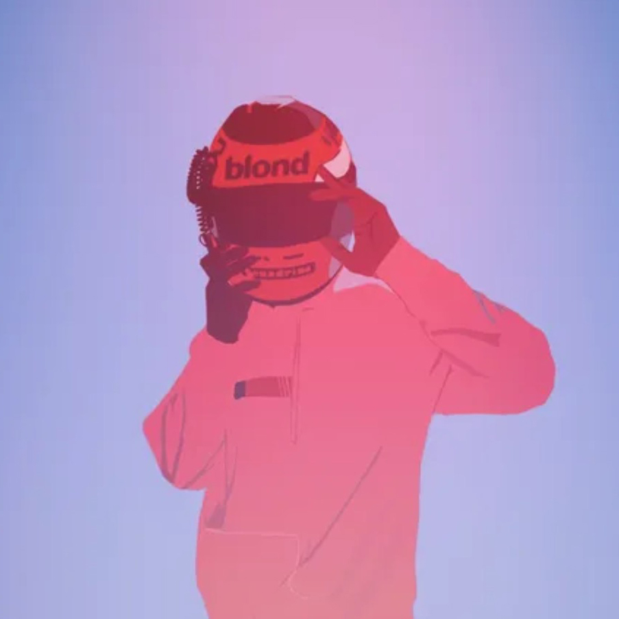

Channel ORANGE
Released August, 2012
Production:
- Frank Ocean, Producer
- Jonathan Ikpeazu, Producer
- Pharrell Williams, Producer
Channel Orange (stylized as channel ORANGE) is the debut studio album by American R&B singer-songwriter Frank Ocean. It was released on July 10, 2012, by Def Jam Recordings. After releasing his mixtape Nostalgia, Ultra the previous year, Ocean began writing new songs with Malay, a producer and songwriter who then assisted him with recording Channel Orange at EastWest Studios in Hollywood. Rather than rely on samples as he had with his mixtape, Ocean wanted to approach sound and song structure differently on the album. Other producers who worked on the album included Om'Mas Keith and Pharrell Williams.
 

Sida One
- Start
- Thinkin bout you
- Fertilizer
- Sierra Leone
- Sweet Life
- Not Just Money
Sida Two
- Pyramids
- Lost
- White
- Monks
- Bad Religion
- End